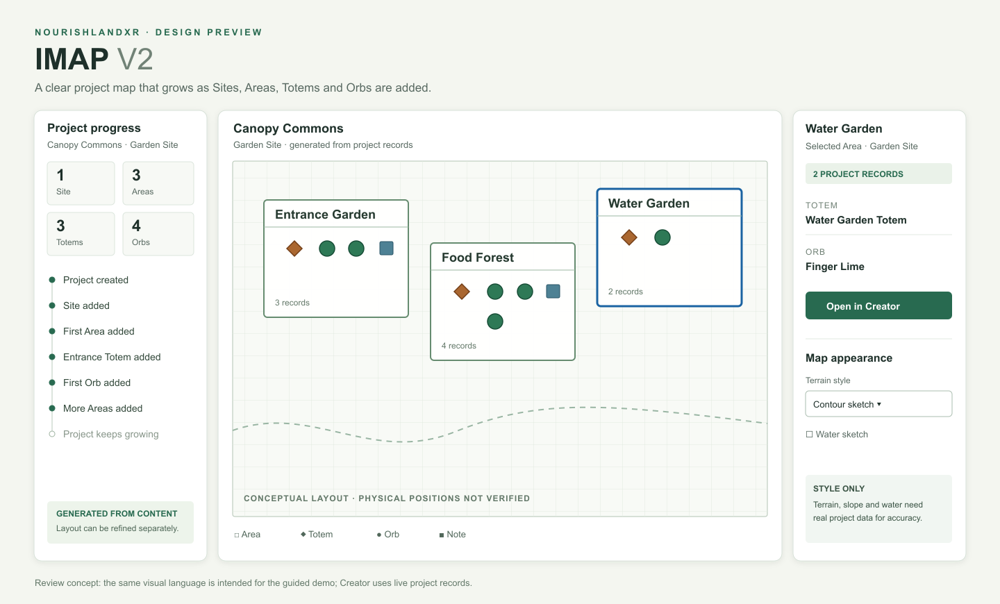

Creator planning map V2
This flat concept is retained for detailed Creator planning. It is separate from the circular 3D Interactive Map (IMAP) used in the demo.

Try the interactive planning-map experiment · Review the circular IMAP disc direction